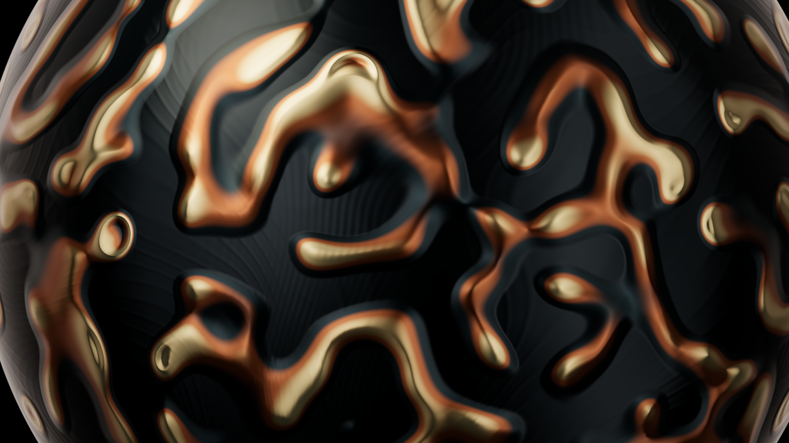
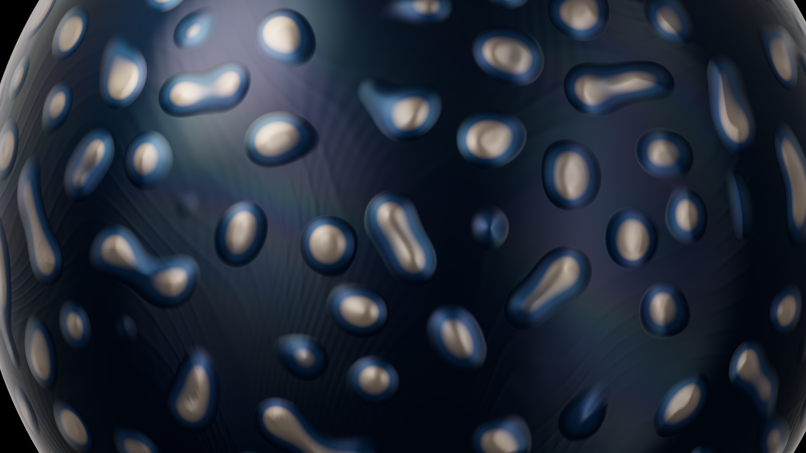

Crescita organica
Due materie costruite da una sfera, con gli stessi controlli. Venature, cellule, colore e rilievo si combinano con la forma, le luci e le texture di Prisma. Nessuna modalità separata.
Venature di rame
Una rete irregolare di bordi metallici su una superficie scura.
Guarda la macro

Cellule di porcellana
Zone chiare e rilievi morbidi su una materia blu con riflessi di interferenza.
Guarda la macro

Per provarli
In Prisma apri Aspetto → Materia → Crescita organica. Gli esempi Venature e Cellule cambiano solo la crescita. Per aprire le due composizioni complete, scarica il preset e importalo da Preset.
Intensità miscela il trattamento con la materia; Rete di bordi passa dalle zone piene ai contorni. Colore usa la palette corrente. Nutrimento, Consumo e Sviluppo ricalcolano la simulazione. Scorrimento e Cicli sono disponibili anche in Movimento.
Il campo di reazione-diffusione è tridimensionale e senza cuciture. Il rilievo è di superficie: cambia le normali e l’illuminazione, non il contorno o le collisioni. Il movimento fa scorrere il campo calcolato lungo un percorso chiuso; non ripete la crescita biologica. Loop dimostrativi: 1280 × 720, 30 fps, 4 secondi.
Metodo Gray–Scott: Karl Sims. Calcolo adattato da Daishin Ueyama · MIT.